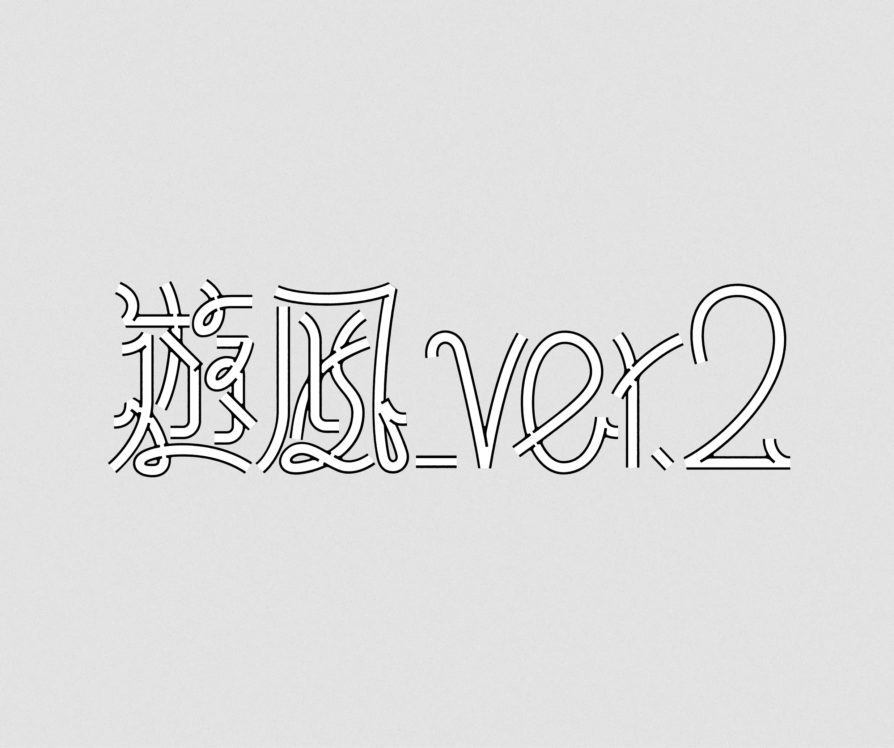
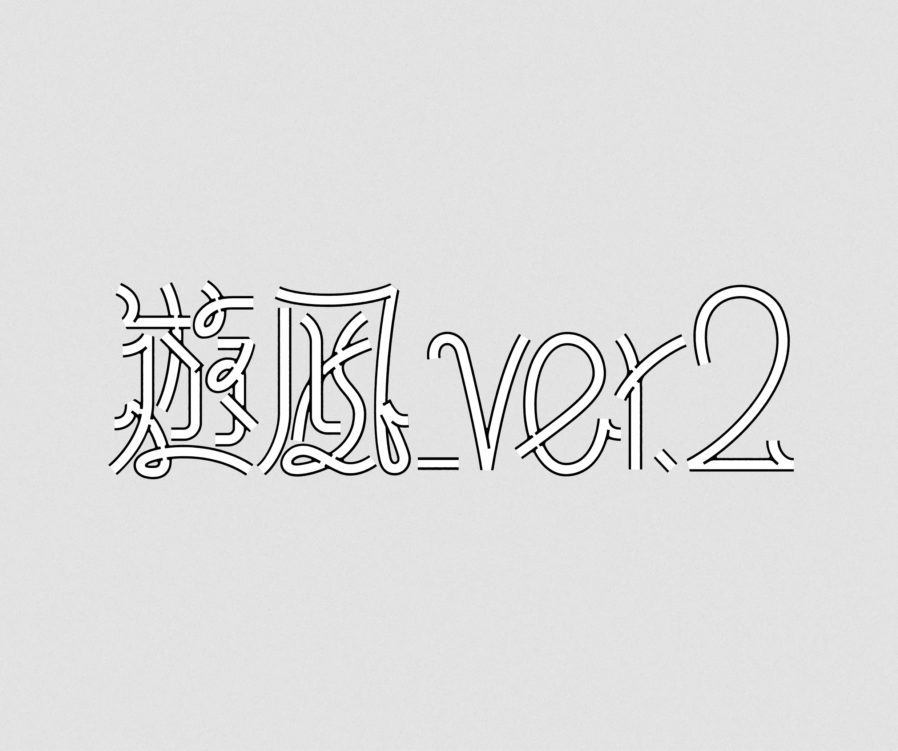
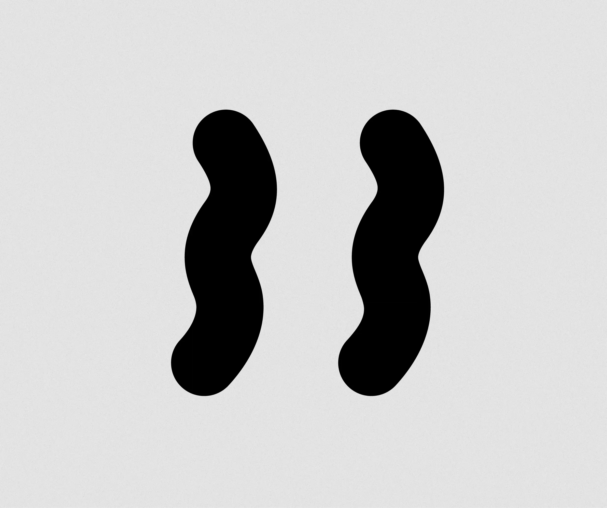
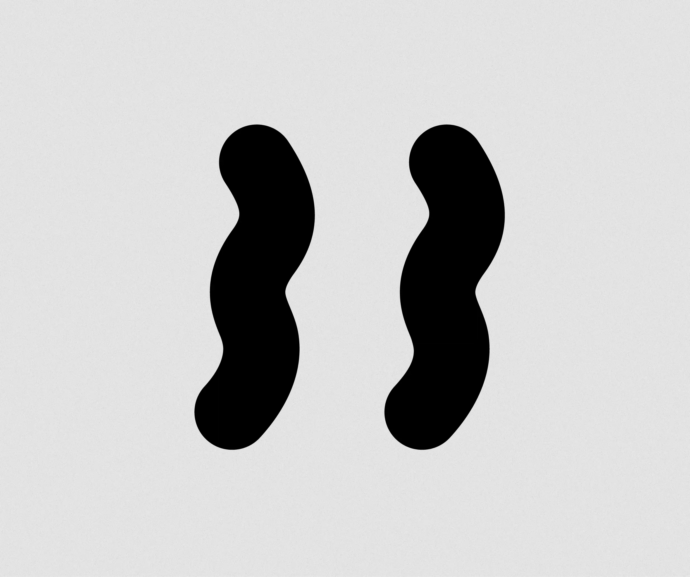

yuna
ニョロ目と波線をモチーフとしたグレースケールのイラストレーションが特徴的な、遊凪（ゆうな）さんのデザイン制作です。均一な線を用いたフラットな着色技法は、一見するとコーポレートメンフィスのような硬質な印象を与えがちです。しかし、ニョロ目をはじめとする有機的な形状の線を使用するなど、細部にまでこだわったディテールによって、彼女独自のゆったりとした世界観が見事に表現されています。
遊凪さんが制作されたイラストレーションを収録した冊子「遊凪_Ver.2」では、特に「線」と「ニョロ目」を彼女の表現における独自性と捉えました。この要素を活かした構成で、ロゴと表紙デザインを作成しています。
This design work by Yuna features grayscale illustrations characterized by wiggly eyes and wavy lines. The technique of drawing using flat coloring with fixed-width lines tends to create a rigid impression, reminiscent of corporate Memphis style. However, through intricate details—such as the wiggly eyes and other organic shapes rendered as lines—her unique, relaxed worldview is expressed.
The booklet "Yuna_Ver.2," featuring illustrations created by Yuna, identifies her distinctive style as characterized by lines and squiggly eyes. The logo and cover design were created using this motif.
 

 
